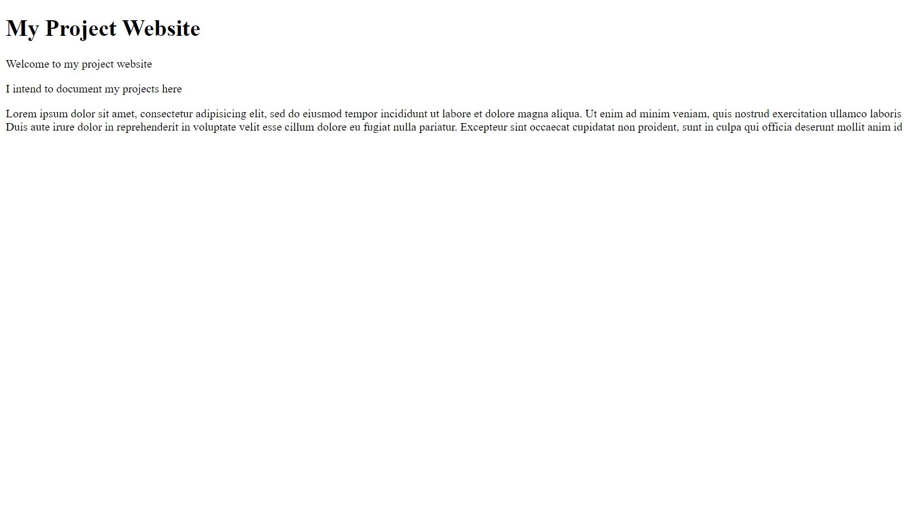
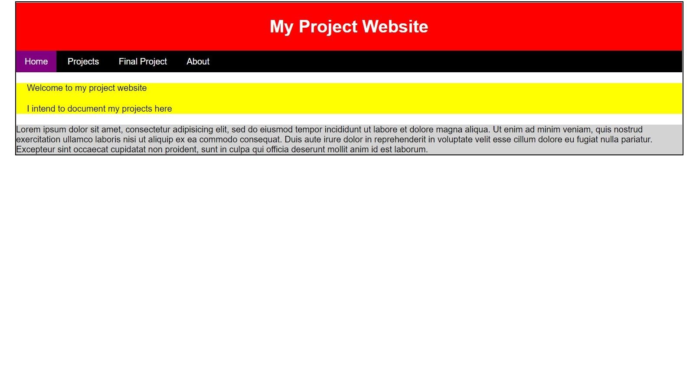

I learnt that HTML is just the content of the site adn that CSS is needed to add a layout to the site, essentially, adding a design to the website.
I had first learnt that in css, a stylesheet was very important to add designs into the site. This need a separate file with the .css ending. Then I had to specify which area of the .html file had what text colour, what background colour and so on. I first experimented with it that way until the teacher taught us the div function which automatically divided parts of the site so that I can have different designs for them. With that, I started experimenting with the stylesheet to make the best design website I can.
This was what it looked like before and after I added a stylesheet.


However, after many failed iterations, I eventually decided on using a design already made by w3schools. In the beginning, I had a hard time trying to figure out what does what but eventually, I got it and could start designing my website. The index file or the main page was easy to edit as it was already given in the file, all I had to do was to change what was written there and the images on the site. The stylesheet was also given but I had a really hard time figuring out what does what in the beginning as I had not understood how the stylesheet was being used. I eventually figured it out and could edit the text colours and the site background.
In my opinion, the hardest part about making the website was the other sites I had to implement into it for extra infomation when it couldn't be fitted into the main site such as "What I learnt" and "My Projects". I had a rough time figuring out how to add in the top menu in small screens so that the navigation bar appears in small screens. I found out later it was due to a missing < /div> after many trial and errors but that also allowed me to add in the animations on opening and closing the sidebar. Honestly, the most annoying part was that I had to copy and paste what I added in one site to the other sites due to how I had made these sites. I couldn't just copy and paste the same site over and over and just change the site name as there was already existing infomation in the other sites that I cannot delete. Thus, I just stuck to the copy and paste method when there is something I need to add to the other sites.